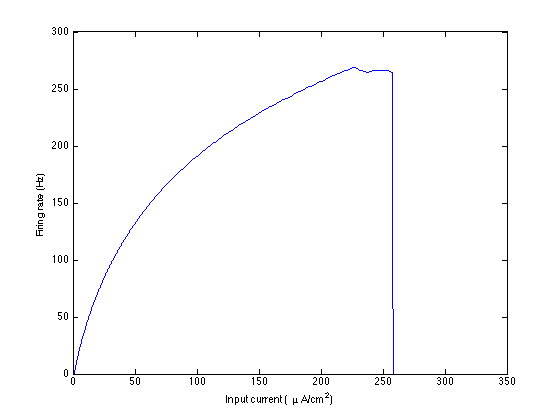
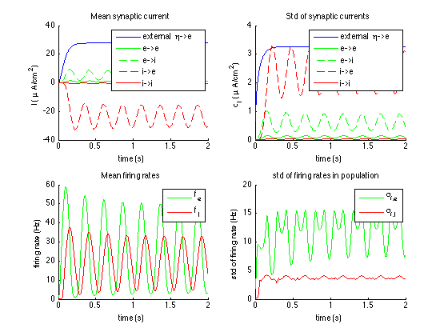

Simulation code as used in: A neural mass model based on single cell dynamics to model pathophysiology, Bas-Jan Zandt et al. 2014, Journal of Computational Neuroscience - "NMM" folder contains our neural mass model (NMM) by itself. The three scripts are: a main script to run the model (run_meanfieldapprox_makefigures.m), the model itself, and the set of parameters. gF-curve.mat is the curve of the firing rates as function of the synaptic conductance. After you type run_meanfieldapprox_makefigures on the matlab command line the following figures should appear shortly:   - With the folder "Network and NMM" a network can be compared with our NMM. The parameters of the NMM are calculated from those of the network. - The main file is URD_2populations_limitcycle.m. It generates two neuronal populations with synaptic connections (using Norns' Urd), executes a C++ code (Norns' Verdandi) to simulate this network, and then runs the corresponding NMM. _ Norns (Skuld, Urd & Verdandi) is a simulator and analysis package for simple neuronal networks. Norns can be found on ModelDB, accession # 154739. The simulator was adapted (neuron types added) by Bas-Jan Zandt. - run_meanfieldapprox_makefigures.m is called by URD_2populations_limitcycle.m and runs the NMM and plots the results of the two models. - myfour and myifour are functions to simplify calculating fourier transforms in the correct units. -*.txt and *.mat files are used for storing simulation results -gF_curve is the firing rate curve of a single neuron and needs to be recalculated from URD_determine_gFcurve when different neuron parameters are used. - "Brian-network and NMM" contains code ported from Norns to Brian, a python neural network simulator. It requires an install of python 2.7 with Brian ( http://briansimulator.org ). run_meanfieldapprox_makefigures.m can be run from Matlab to run everything. This port is provided as an extra service for those using Brian and was not used for the research described in the paper. (If you can implement the synapses in a more efficient way, please let me know.) If you have questions or suggestions, you can contact me at b.zandt@utwente.nl, or www.researchgate.net/profile/Bas-Jan_Zandt. I'll be happy to help.